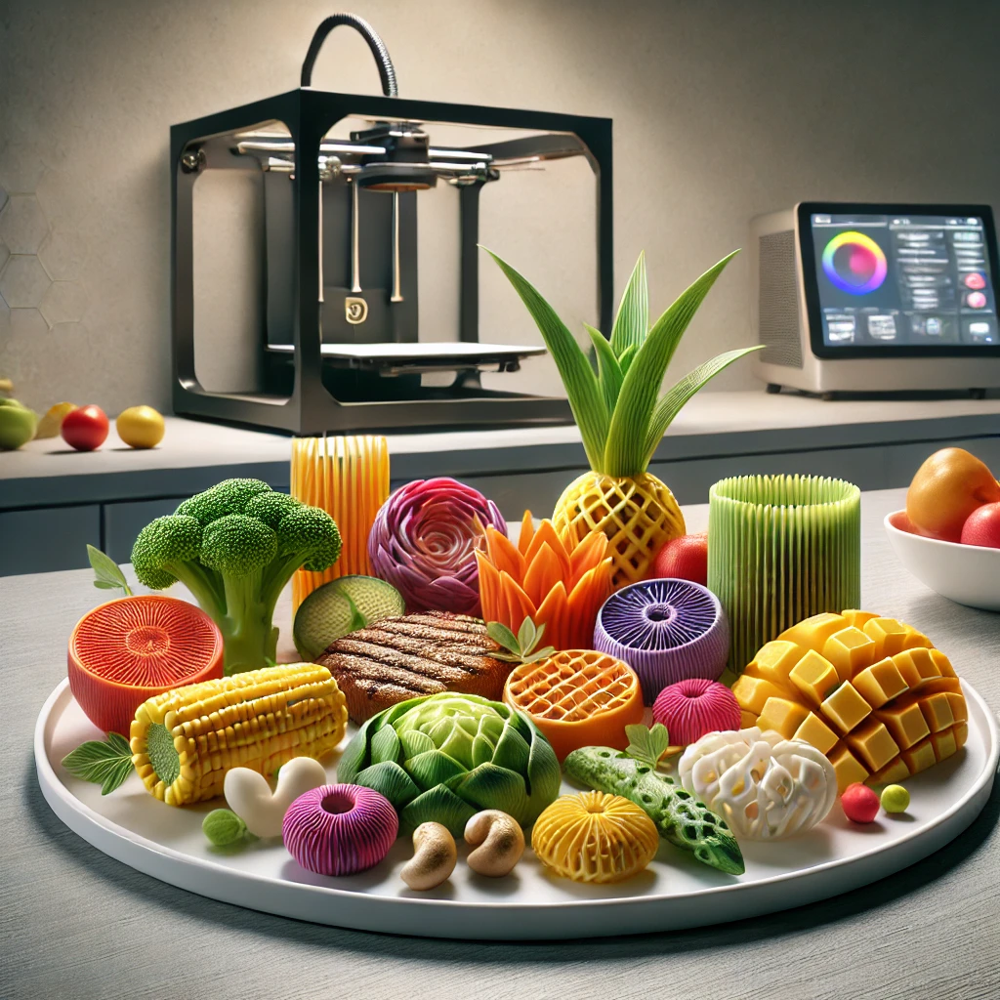

My Projects
NutriPrint
NutriPrint is an innovative application designed to revolutionize the way we approach meal planning and healthy eating. This app not only plans personalized meals based on individual dietary preferences and nutritional needs but also integrates cutting-edge 3D printing technology to create actual meals.
Key Features:
- Personalized Meal Planning: Users can input dietary restrictions, preferences, and health goals. The app generates tailored meal plans that are both delicious and nutritionally balanced.
- 3D Meal Printing: Experience the future of dining with NutriPrint’s ability to transform meal plans into 3D printed meals, printed layer by layer for precision and creativity.
- Extensive Recipe Database: Explore a diverse range of cuisines and discover new recipes that fit individual tastes, all within the app.
- Interactive User Interface: A user-friendly interface ensures that navigating through meal options and printing settings is seamless and enjoyable.
- Health Tracking: Keep track of nutritional intake, manage dietary goals, and receive insights based on user preferences and health objectives.
Benefits:
NutriPrint not only simplifies the process of meal planning but also promotes healthier eating habits. By providing users with customized meal options, it empowers them to make informed dietary choices. The integration of 3D printing technology makes healthy eating fun and engaging, encouraging users to explore new foods and cooking techniques.
Technology Behind NutriPrint:
NutriPrint leverages advanced technologies, including artificial intelligence and machine learning algorithms, to analyze user data and preferences. This allows for the generation of personalized meal plans that cater to individual needs. The app also utilizes 3D printing technology to bring meal plans to life, creating visually appealing and nutritious meals with precision.
User Experience:
The app is designed with the user in mind, featuring an intuitive layout that allows for easy navigation and interaction. Users can quickly input their dietary preferences, browse meal options, and initiate the 3D printing process with just a few clicks. The engaging visual design and interactive elements make the experience enjoyable and informative.
NutriPrint is not just about convenience; it also emphasizes the importance of healthy eating in today’s fast-paced world. By combining technology and nutrition, NutriPrint empowers users to take charge of their health in an engaging and enjoyable way.
 Visit NutriPrint